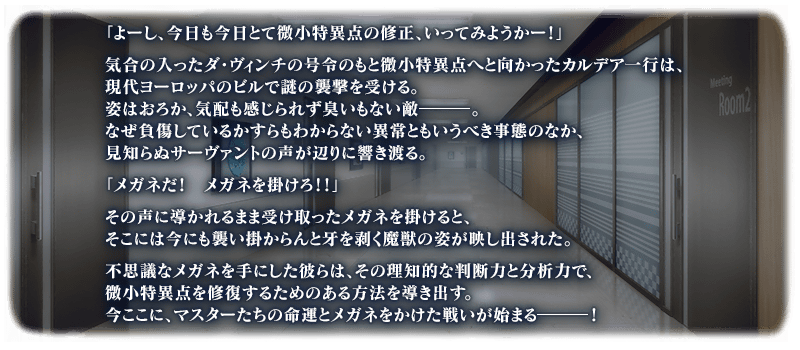
做為從本日實施的「White Day Spectacles」的一個內容，舉辦期間限定活動「15人的理智眼鏡們」！
對手是不戴眼鏡就無法認知的謎之敵人，為了修復微小特異點而拉開戰鬥的布幕。
本活動中，除了享受故事的主線關卡將逐日開放外，在通過各節後會開放收集活動道具的自由關卡。
攻略活動關卡，見證故事的結尾吧！
※本頁面皆為開發中圖片。會有與實際圖片相異的情況。 ※在2022年2月27日(日)播送節目內公開的內容皆為開發中，與實際內容有所差異。 ※一部份的關卡為日後開放。
◆活動舉辦期間◆
2022年3月2日(三) 17:00～3月16日(三) 11:59
◆活動參加條件◆
滿足以下條件的御主才能參加
・通過「特異點F 炎上汙染都市 冬木」
※在文字冒險部份包含第2部 第5章 亞特蘭提斯為止的一部份內容。
◆活動參加推薦◆
・通過第2部 第4章「Lostbelt No.4 創世滅亡輪廻 由伽・剎多羅 黑色最終之神」
注意
本活動是推薦通過第2部 第4章的活動。另外，包含有關第2部 第5章 亞特蘭提斯為止的一部份劇透內容。
關於未通過到第2部 第5章 亞特蘭提斯而參加本活動的玩家，請理解包含一部份劇透來參加。
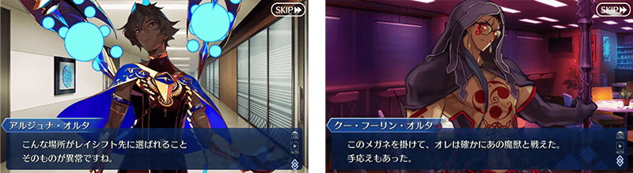
※在2018年12月31日(二) 23:00以後新配信的主線故事及期間限定活動、一部份關卡、宣傳活動及召喚中，會顯示隱藏真名的對象從者真名。
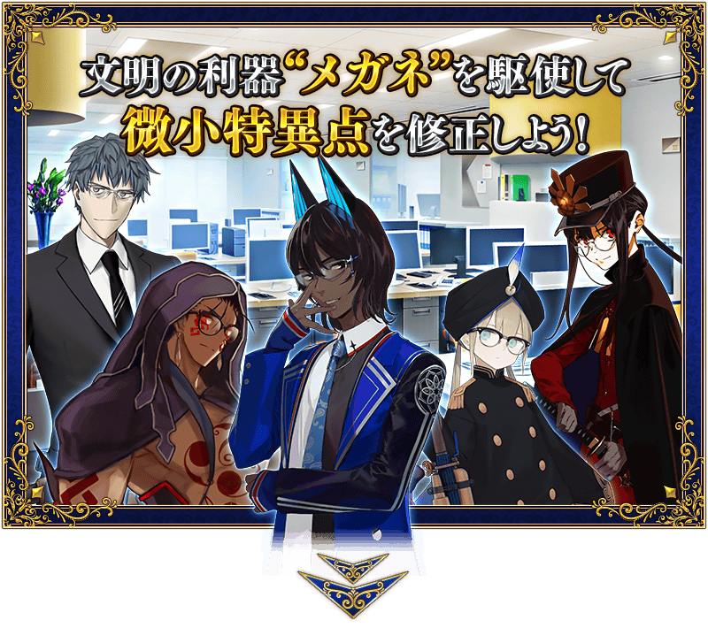 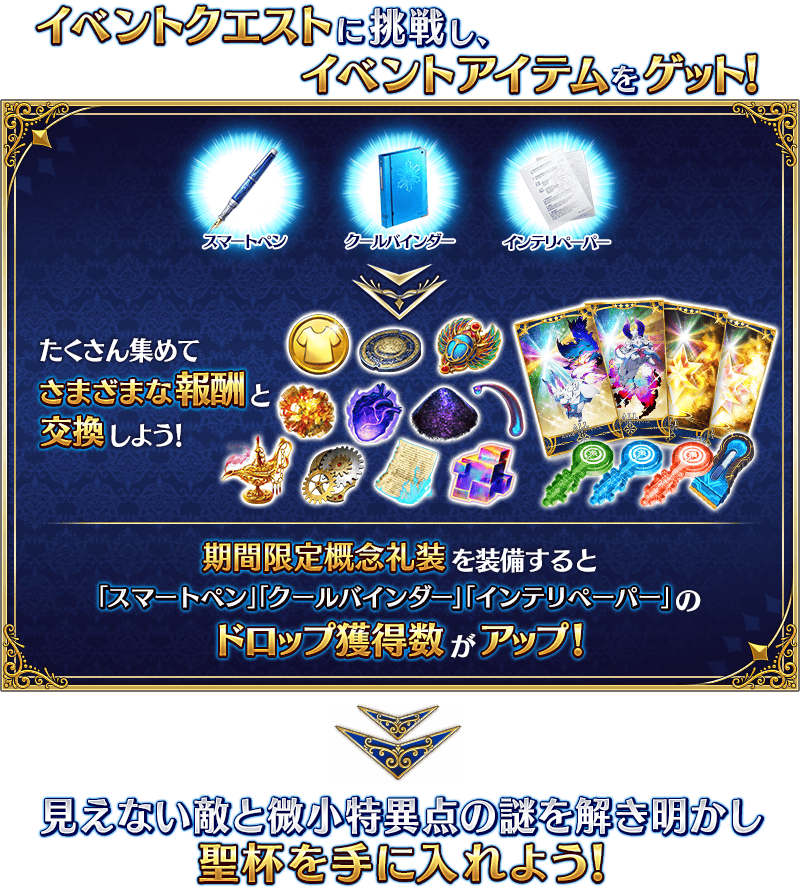
享受故事的主線關卡會逐日開放。
通過主線關卡第一節的話，會開放收集活動道具的自由關卡。
之後的自由關卡是藉由通過主線關卡來開放。
【關卡的舉辦期間】
| 關卡的種類 | 舉辦期間 |
|---|---|
|
開幕(オープニング) 主線關卡第一節 自由關卡 |
2022年3月2日(三) 17:00～ 3月16日(三) 11:59 |
|
主線關卡第二節 自由關卡 |
2022年3月3日(四) 17:00～ 3月16日(三) 11:59 |
|
主線關卡第三節 自由關卡 |
2022年3月4日(五) 17:00～ 3月16日(三) 11:59 |
|
主線關卡第四節 自由關卡 |
2022年3月5日(六) 17:00～ 3月16日(三) 11:59 |
|
主線關卡第五節 自由關卡 |
2022年3月6日(日) 17:00～ 3月16日(三) 11:59 |
|
主線關卡第六節 自由關卡 |
2022年3月7日(一) 17:00～ 3月16日(三) 11:59 |
|
主線關卡第七節 主線關卡最終節 自由關卡 |
2022年3月8日(二) 17:00～ 3月16日(三) 11:59 |

期間限定活動「15人的理智眼鏡們」中，通過特定關卡的話可於活動道具交換入手新登場靈衣的靈衣開放權。
在此新登場的靈衣，「★5(SSR)阿周那〔Alter〕」的靈衣「擔任學生會長的阿周那」與本活動的故事中從者們成為戴上眼鏡之姿的13位眼鏡靈衣，無論哪件靈衣都可靠White Day Spectacles靈衣開放券開放。
※想靈衣開放的話，除了靈衣開放權外再加上必須滿足一些開放條件。 ※請注意未持有靈衣開放權對象從者的情況，可入手靈衣開放權。但無法進行靈衣開放。

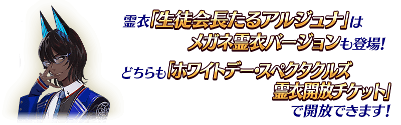

能在本活動入手的靈衣，使用可靠活動的主線關卡通過報酬入手「White Day Spectacles靈衣開放券」後開放。
使用「White Day Spectacles靈衣開放券」開放的靈衣，不需要素材和QP。
◆「White Day Spectacles靈衣開放券」入手期間◆
2022年3月2日(三) 17:00～3月16日(三) 11:59
◆有關本活動中靈衣的靈衣開放權的注意◆
※在本活動入手靈衣的靈衣開放所需的「White Day Spectacles靈衣開放券」，只限期間限定活動「15人的理智眼鏡們」的活動舉辦期間中才能入手。
※活動期間結束後(2022年3月16日(三) 12:00以後)進行本活動入手靈衣的靈衣開放時，變得可選擇使用「White Day Spectacles靈衣開放券」來開放，或跟平常的靈衣同様使用QP與素材來開放。
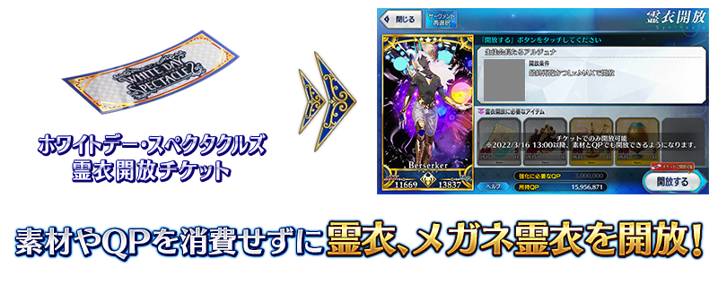 ※3月1日(二) 18:00圖片更新
下述的期間中，在活動關卡的戰鬥中御主之姿會變成眼鏡Ver.。會對應到所有的魔術禮裝，裝備喜愛的的魔術禮裝推進活動吧！
◆舉辦期間◆
2022年3月2日(三) 17:00～3月16日(三) 11:59
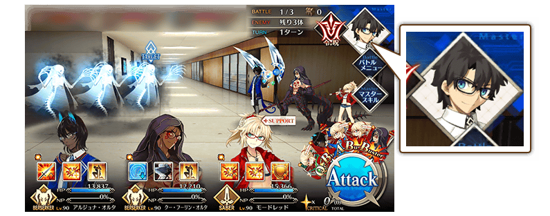
【3月8日(二) 17:00追記】
以通過期間限定活動「15人的理智眼鏡們」主線關卡最終節及「終局特異點」的御主做為對象，開放高難易度的「挑戰關卡」。
「挑戰關卡」就算通過後也不會消失，可以變更從者和概念禮裝的組合等後無限次挑戰。 ※關卡通過報酬、戰利品、御主EXP、魔術禮裝EXP、絆點數只可在初次通過時獲得。
◆挑戰關卡開放時間◆
2022年3月8日(二) 17:00～
◆挑戰關卡參加條件◆
滿足以下條件的御主才能參加
・通過期間限定活動「15人的理智眼鏡們」的主線關卡最終節
・通過「終局特異點」
◆挑戰關卡初次通過報酬◆
傳承結晶 1個
追加眼鏡靈衣的13位從者，會做為期間限定活動「15人的理智眼鏡們」自由關卡的支援從者以每日交替登場！
藉此機會享受在意從者的戰鬥動作和語音吧！
◆舉辦期間◆
2022年3月2日(三) 17:00～3月16日(三) 11:59
【每日交替時間表】
| 登場期間 | 每日交替支援從者 |
|---|---|
|
2022年3月2日(三) 17:00～ 3月16日(三) 11:59 |
★5(SSR)阿周那〔Alter〕 |
|
2022年3月4日(五) 17:00～ 3月5日(六) 16:59 |
★5(SSR)尼莫 ★5(SSR)庫・夫林〔Alter〕 |
|
2022年3月5日(六) 17:00～ 3月6日(日) 16:59 |
★5(SSR)恩奇杜 ★5(SSR)迦爾納 |
|
2022年3月6日(日) 17:00～ 3月7日(一) 16:59 |
★4(SR)高文 ★4(SR)齋藤一 |
|
2022年3月7日(一) 17:00～ 3月8日(二) 16:59 |
★5(SSR)梅林 ★3(R)馮・霍恩海姆・帕拉塞爾斯 |
|
2022年3月8日(二) 17:00～ 3月9日(三) 16:59 |
★2(UC)夏爾＝亨利・桑松 ★1(C)織田信勝 |
|
2022年3月9日(三) 17:00～ 3月10日(四) 16:59 |
★5(SSR)莫德雷德(Saber) ★3(R)美杜莎(Rider) |
|
2022年3月10日(四) 17:00～ 3月11日(五) 16:59 |
★5(SSR)尼莫 ★5(SSR)庫・夫林〔Alter〕 |
|
2022年3月11日(五) 17:00～ 3月12日(六) 16:59 |
★5(SSR)恩奇杜 ★5(SSR)迦爾納 |
|
2022年3月12日(六) 17:00～ 3月13日(日) 16:59 |
★4(SR)高文 ★4(SR)齋藤一 |
|
2022年3月13日(日) 17:00～ 3月14日(一) 16:59 |
★5(SSR)梅林 ★3(R)馮・霍恩海姆・帕拉塞爾斯 |
|
2022年3月14日(一) 17:00～ 3月15日(二) 16:59 |
★2(UC)夏爾＝亨利・桑松 ★1(C)織田信勝 |
|
2022年3月15日(二) 17:00～ 3月16日(三) 11:59 |
★5(SSR)莫德雷德(Saber) ★3(R)美杜莎(Rider) |
超值攻略方法・其1
本活動的期間中，一部份的從者在活動關卡中會得到「自身的攻擊威力提升」的加成！
並且，所有的男性從者在活動關卡中會得到「絆點數獲得量提升」的效果！
※活動加成的效果量因從者而異。
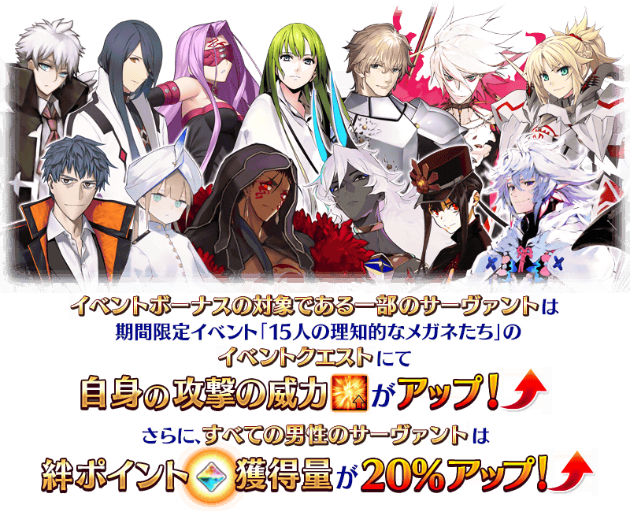
【活動加成的效果量與對象從者】
| 自身的 攻擊威力 |
絆點數 獲得量 |
職階 | 稀有度 | 從者名 |
|---|---|---|---|---|
| ＋100％ | 只限自身 ＋50% |
Saber | ★★★★ | 齋藤一 |
| Archer | ★ | 織田信勝 | ||
| Rider | ★★★★★ | 尼莫 | ||
| Berserker | ★★★★★ | 阿周那〔Alter〕 | ||
| ★★★★★ | 庫・夫林〔Alter〕 | |||
| ＋50％ |
只限自身 ＋30% |
Saber | ★★★★ | 高文 |
| Lancer | ★★★★★ | 恩奇杜 | ||
| ★★★★★ | 迦爾納 | |||
| Caster | ★★★★★ | 梅林 | ||
| ★★★ | 馮・霍恩海姆・帕拉塞爾斯 | |||
| Assassin | ★★ | 夏爾＝亨利・桑松 | ||
| ＋50％ | ー | Saber | ★★★★★ | 莫德雷德 |
| Rider | ★★★ | 美杜莎 | ||
| ＋30％ |
只限自身 ＋20% |
Saber | ★★★★★ | 西格魯德 |
| ★★★★ | 齊格飛 | |||
| ★★★★ | 蘭陵王 | |||
| Archer | ★★★★★ | 詹姆斯・莫里亞蒂(新宿的Archer) | ||
| ★★★★ | Emiya | |||
| ★★★ | 威廉・泰爾 | |||
| Rider | ★★★★★ | 阿基里斯 | ||
| ★★★★ | 凱妮絲 | |||
| ★★★★ | 坂田金時 | |||
| Caster | ★★★★★ | 諸葛孔明〔艾梅洛Ⅱ世〕 | ||
| ★★ | 陳宮 | |||
| ★★ | 漢斯・克里斯蒂安・安徒生 | |||
| Assassin | ★★★★★ | 李書文 | ||
| ★★★ | 亨利・傑基爾＆海德 | |||
| ★★ | 歌劇魅影 | |||
| Berserker | ★★★★★ | 坂田金時 | ||
| Ruler | ★★★★★ | 天草四郎 | ||
| Avenger | ★★★★★ | 巖窟王 | ||
| Foreigner | ★★★★★ | Voyager | ||
| ＋30％ | ― | Saber | ★★★★ | 葛飾北齋 |
| ★★★★ | 女王梅芙 | |||
| Archer | ★★★★★ | 貞德 | ||
| ★★★★★ | 清少納言 | |||
| ★★★★ | 海倫娜・布拉瓦茨基 | |||
| ★★★★ | 刑部姬 | |||
| ★★★★ | 南丁格爾〔聖誕〕 | |||
| Lancer | ★★★★ | 虞美人 | ||
| ★★★★ | 謎之Alterego・Λ | |||
| Rider | ★★★★ | 卡米拉 | ||
| ★★★★ | 紫式部 | |||
| Caster | ★★★★★ | 紫式部 | ||
| ★★★★★ | 李奧納多・達文西 | |||
| ★★★★ | 夏綠蒂・科黛 | |||
| Assassin | ★★★★★ | 刑部姬 | ||
| ★★★★★ | 光之高揚斯卡婭 | |||
| ★★★★ | 虞美人 | |||
| Berserker | ★★★★★ | 謎之女主角X〔Alter〕 | ||
| ★★★★ | 清少納言 | |||
| ★★★★ | 布倫希爾德 | |||
| ★★★★ | 彭忒西勒亞(黃金國的Berserker) | |||
| Ruler | ★★★★ | 李奧納多・達文西 | ||
| MoonCancer | ★★★★★ | 吉娜可＝加里吉利(偉大石像神) | ||
| ★★★★ | BB | |||
| Foreigner | ★★★★★ | 雅克・德・莫萊 | ||
| ★★★★★ | 闇之高揚斯卡婭 | |||
| ★★★★ | 謎之偶像X〔Alter〕 | |||
| Shielder | ★★★ | 瑪琇・基利艾拉特 | ||
| ― | 只限自身 ＋20％ |
上述以外的所有的男性從者 | ||
◆有關男性從者的注意◆
※除了性別「男性」的從者外，下述的從者也包含在活動加成的對象。
・★5(SSR)阿斯托爾福(Saber)
・★5(SSR)沖田總司〔Alter〕(Saber)
・★5(SSR)狄奧斯庫洛伊
・★5(SSR)俄里翁
・★5(SSR)恩奇杜
・★5(SSR)羅慕路斯＝奎里努斯
・★5(SSR)伽摩(Assassin)
・★5(SSR)“山之翁”
・★5(SSR)始皇帝
・★5(SSR)伽摩(Avenger)
・★5(SSR)平景清
・★5(SSR)魔王信長(織田信長)
・★5(SSR)蘆屋道滿
・★4(SR)夏爾・德翁
・★4(SR)凱妮絲(Lancer)
・★4(SR)阿斯托爾福(Rider)
・★4(SR)凱妮絲(Rider)
・★4(SR)鬼一法眼
・★4(SR)謎之蘭丸X
※就算成為對象從者也會有未在本活動的主線劇本登場的情況。 ※自2月27日(日) 17:00，在從者選擇畫面和從者強化畫面等，追加活動加成篩選器。由於是只顯示於活動活躍從者的便利功能，敬請活用。 ※「★5(SSR)吉娜可＝加里吉利(偉大石像神)」是「★5(SSR)偉大石像神」靈基再臨第2階段後名稱變成「★5(SSR)吉娜可＝加里吉利」。 ※「★5(SSR)魔王信長(織田信長)」是「★5(SSR)織田信長」靈基再臨第3階段後名稱變成「★5(SSR)魔王信長」。
超值攻略方法・其2
【3月2日(三) 17:00追記】
裝備期間限定概念禮裝讓活動道具的掉落獲得數提升！
裝備在聖晶石召喚Pick Up的期間限定概念禮裝「★5(SSR)一夜の夢」「★5(SSR)ウォーターガンバトル」「★4(SR)探偵ヱドモン～最後の事件編～」「★4(SR)月夜の邂逅」「★4(SR)バディ・コップ」「★3(R)アルティメット・ハーモニー」「★3(R)カルデア・エクスプレス」「★3(R)カルデア不良組」「★3(R)パワーショット」的話，活動道具「智慧鋼筆」「冷酷文件夾」「知識紙張」各自的掉落獲得數會提升。
※請注意各關卡的道具掉落率並非100％。
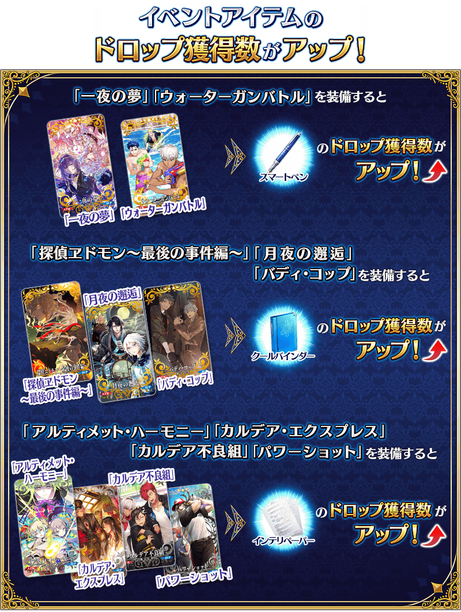
【3月2日(三) 17:00追記】
| 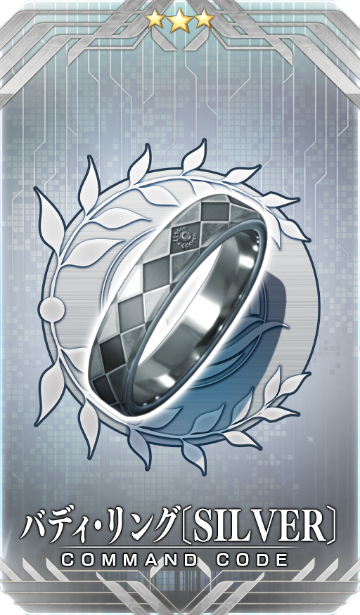 |
★★★R |

活動道具可自點擊管理室(ターミナル)畫面右上「活動報酬」鍵所顯示的「活動道具交換」畫面，交換以下的道具。
※關於傳承結晶、英靈結晶・流星之芙芙ALL★4(HP)、英靈結晶・日輪之芙芙ALL★4(ATK)的交換，在進行3月8日(二)開放的活動關卡後才能交換。 ※靈衣開放權在推進本活動的主線關卡後才能交換。 ※活動道具交換期間結束後「智慧鋼筆」「冷酷文件夾」「知識紙張」會消失。
◆交換期間◆
2022年3月2日(三) 17:00～3月23日(三) 11:59
◆能用智慧鋼筆交換的道具◆
|
【靈衣開放權】 【技能強化＆靈基再臨素材】 【靈基再臨素材】 【其他道具】 |
◆能用冷酷文件夾交換的道具◆
| 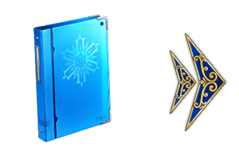 |
【靈衣開放權】
【活動報酬指令紋章】 【技能強化＆靈基再臨素材】 【靈基再臨素材】 【其他道具】 |
◆知識紙張能用交換的道具◆
| 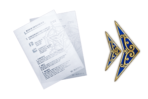 |
【靈衣開放權】 【技能強化＆靈基再臨素材】 【其他道具】 |
【3月12日(六) 17:00更新】
其他還有，包含本活動的宣傳活動「White Day Spectacles」外，「White Day Spectacles Pick Up召喚」「White Day Spectacles 梅林Pick Up召喚」以期間限定舉辦中！
關於詳情，請自下述橫幅確認。
■「White Day Spectacles」詳細情報

■「White Day Spectacles Pick Up召喚」詳細情報

■「White Day Spectacles 梅林Pick Up召喚」詳細情報